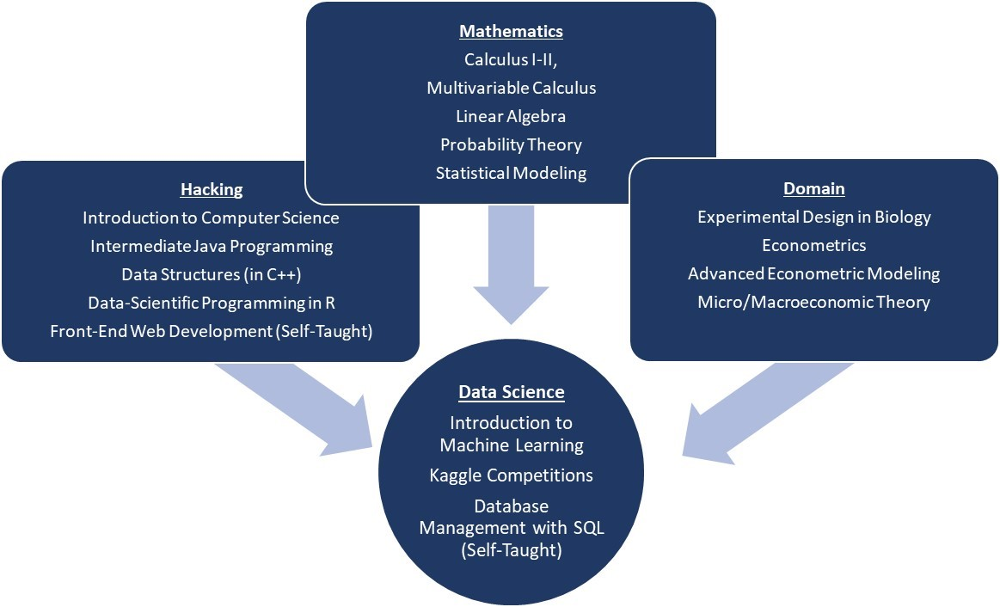
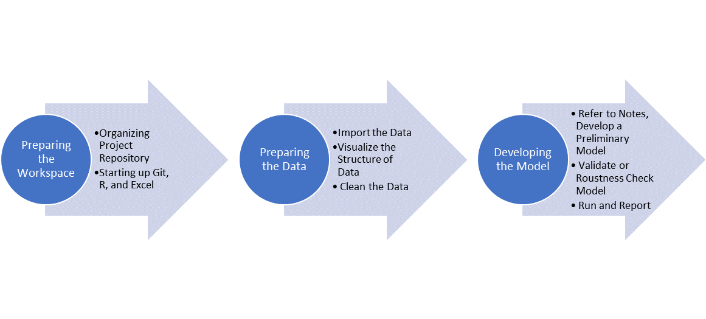

Learning Path
My data science learning has been a combination of liberal arts curriculum and self-guided learning. While my liberal arts institution doesn't have a data science major (even a Statistics/applied math one, for that matter!) I took care to build strong foundations in all the relevant languages, processes, and background knowledge needed to succeed in growing in this data science industry.
My essential toolkit:
- R
- Excel
- SQL
- Git
Other skillsets I have developed:
- Java
- C++
- HTML/CSS
- JavaScript
- LaTeX
The classes I have taken/will take embody the interdisciplinary attitudes of a data-scientist. In particular, I have a strong foundation in domain expertise, hacking, and mathematics.
More Than a "Black Box" Learner
A common challenge data scientists face is the "black box" mentality. You can learn how to execute k-means neighbors or a simple linear regression but really knowing what a model does and when it is the best model requires critical thinking and robustness checks. My learning path balances passive learning with application. A liberal arts education trains you to write effectively, taking the leading role with clubs/organizations, and apply multiple different frameworks of understanding to solve cross-disciplinary problems.
Lawrence University '19
Economics
Cumulative GPA: 3.78
Sustainable Lawrence Gardens Compost Manager: Leads in garden composting practices, coordinates schedules, and does weekly reports on composting affairs.
Lambda Sigma Honor Society Treasurer : Handled reimbursements and collaborated with volunteer committee and head offices to develop fundraising events and volunteer activites campus-wide.
Model UN Portfolio Manager: Supported and collected team research and discussed committee resolutions with teammates.
Policy Debate Captain: Taught argumentation and research skills to newer members, spearheaded collective research efforts, and delegated research duties to members.
Hospice "Friendly Visitor": Made social opportunities and provided emotional support to a number of assigned hospice patients.
Men's Fencing: Participated in the Men's Sabre Squad.
I have been combining my coursework in school with supplementary online resources. Through self-guided learning, I am ahead of my class in knowing a variety of different statistical learning models and techniques, but I know I have a lot to learn.
During my self-guided learning, I am beginning to follow a common workflow:
My Supplemental Learning Resources:

Introduction to Statistical Learning: by James, Witten, Hastie, & Tibshirani
Data Scientist in R Career Track in Datacamp
The Analytic's Edge: by MIT